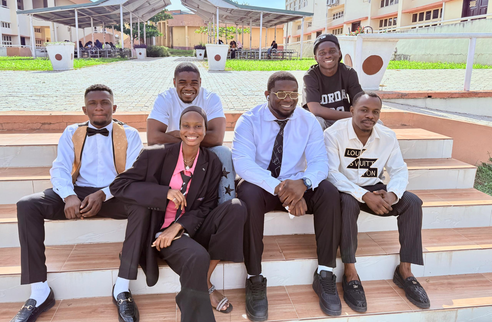
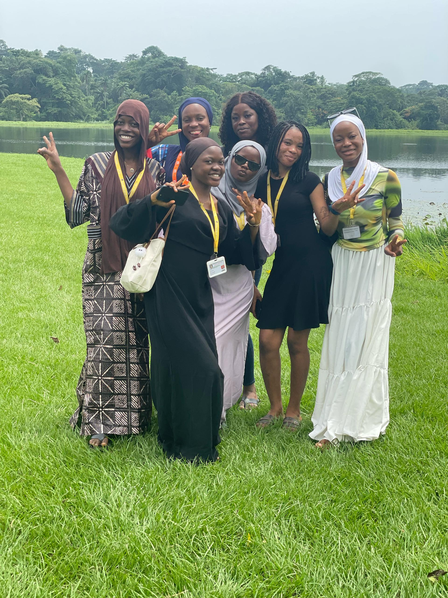
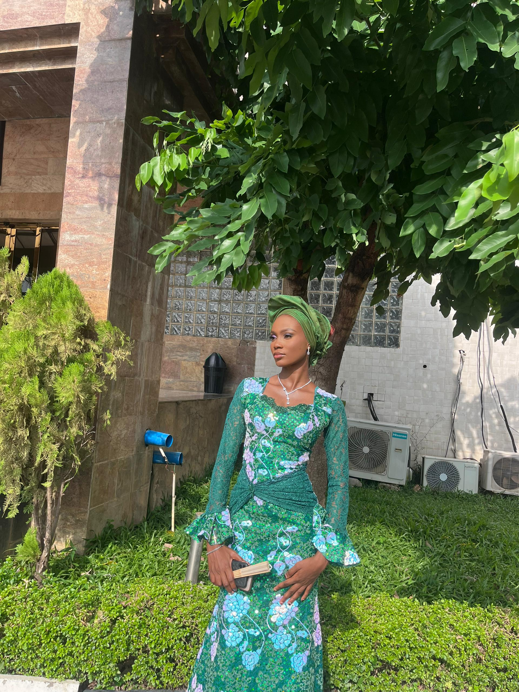
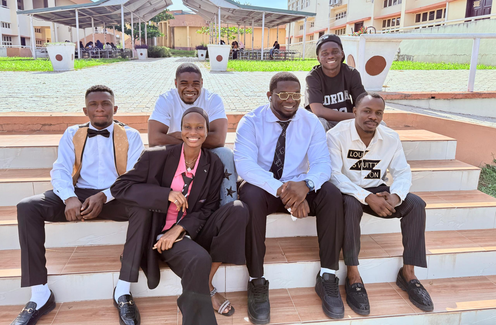
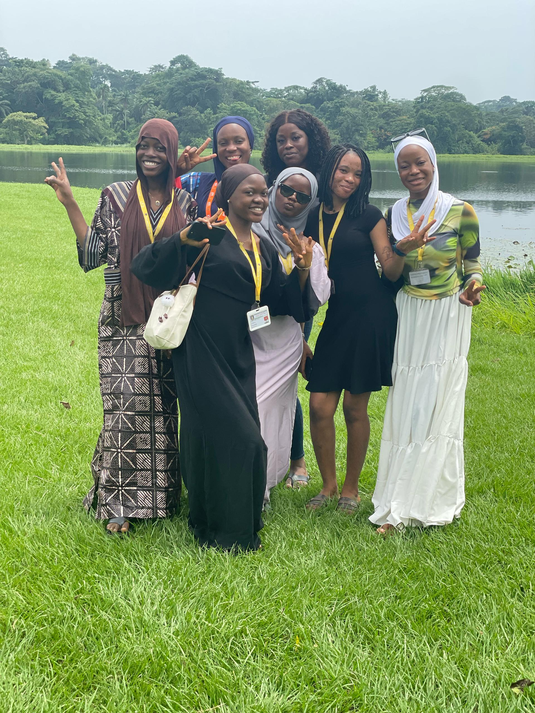
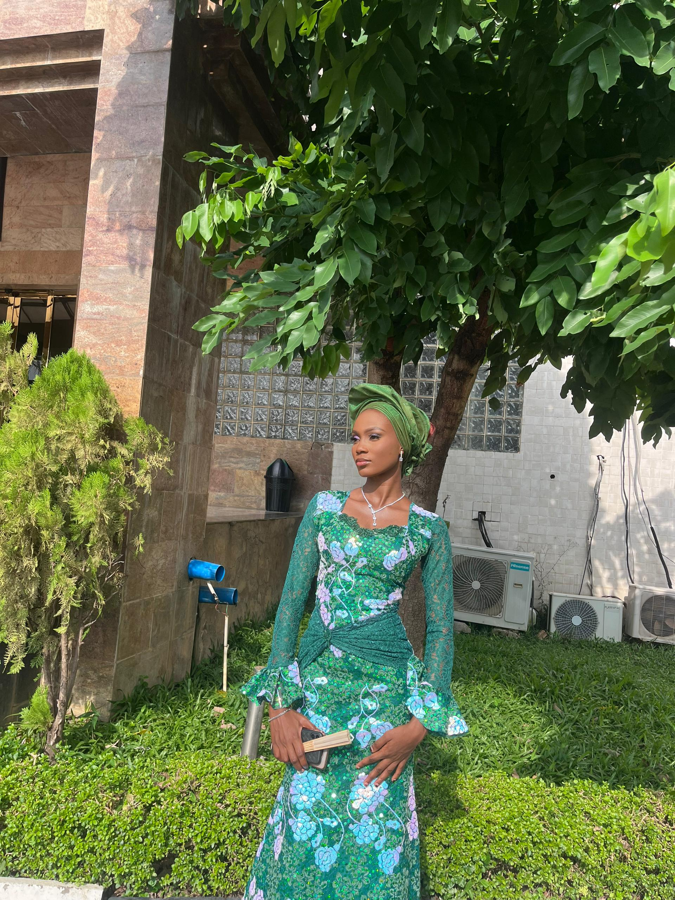

About Me
About Me
I am a recent graduate in Plant Biology with a strong analytical and problem solving skills, now transitioning into technology. I have hands-on experiencei in web design and programming with HTML, CSS, and Python, and I am building projects to strengthen my technical foundation. I am eager to grow in th6e tech6 industry,gain hands-on experience and contribute meaningfully as a tech intern.
 




